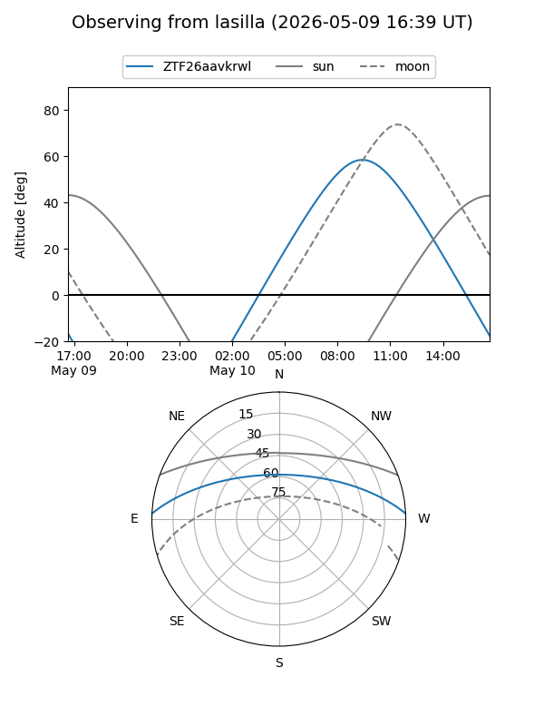
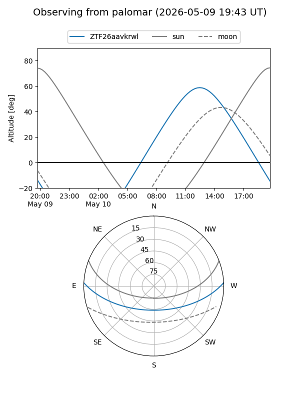

ZTF26aavkrwl
Target ZTF26aavkrwl at 2026-05-09 11:49
Aliases and brokers:
FINK: link
Lasair: link
ALeRCE: link
alt names
ZTF26aavkrwl (ztf,fink_ztf)
Coordinates:
equatorial (ra, dec) = 298.3140,+2.14023
equatorial (HMS+DMS) = 19:53:15.37,+02:08:24.81
galactic (l, b) = (42.0543,-12.70695)
Flags:
Photometry:
last ztfg=18.06
1 ztfg detections
Lightcurve
Visibility


Additional plots